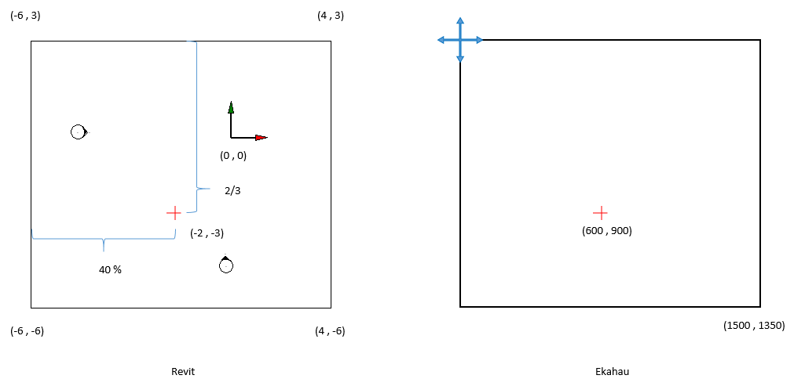
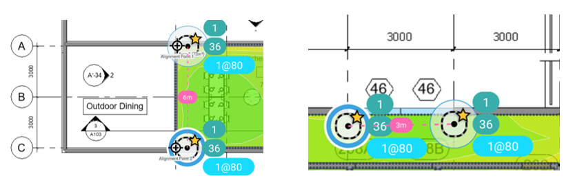

Documentation du projet¶
Installation¶
1. Créer un dossier 'Create' dans le dossier 'repos' de Visual Studio Community.
2. Copier le dossier 'Create' (repo) et le fichier 'Create.sln' à l’intérieur du dossier 'Create' (local).
3.
Le dossier
packages/n’est pas inclus dans le repo. Les dépendances doivent être restaurées.
Avec Visual Studio Community¶
- Ouvrir le fichier
.slndans Visual Studio. Visual Studio détectera les packages manquants et les restaurera automatiquement. -
Si les packages ne se restaurent pas automatiquement :
- Aller dans :
Outils → Gestionnaire de packages NuGet → Console du gestionnaire de packages -
Exécuter :
Update-Package -reinstallou :
nuget restore -
Compiler ensuite le projet avec
Ctrl + Maj + B.
- Aller dans :
4.
Copier le fichier 'Create.addin' dans le dossier 'Addins\<version>' de Revit.
5. Mettre à jour la ligne :
<Assembly>C:\Users\pelon\source\repos\Create\Create\bin\Debug\Create.dll</Assembly>
du fichier 'Create.addin' pour qu’elle pointe vers le fichier 'Create.dll' situé dans 'Create\bin\Debug'.
Copier le contenu du dossier src\tools (repo) dans 'Create\bin\Debug'.
Usage¶
-
Deux vidéos démonstratives se trouvent dans le dossier partagé du projet sur Google Docs.
-
Vidéo de démonstration sur YouTube (partie Revit uniquement) https://www.youtube.com/watch?v=ZQKJaEJjRiY
Development¶
Description des fichiers Ekahau¶
Un fichier Ekahau est une archive ZIP avec l’extension .esx. Ce fichier compressé contient les fichiers suivants :
accessPoints.json
antennaTypes.json
applicationProfiles.json
areas.json
attenuationAreaTypes.json
buildingFloors.json
buildings.json
deviceProfiles.json
floorPlans.json
floorTypes.json
image-4f9c9497-5249-4deb-a5c6-7243d383ec86
images.json
networkCapacitySettings.json
project.json
projectConfiguration.json
projectHistory.json
referencePoints.json
requirements.json
simulatedRadios.json
usageProfiles.json
version
wallPoints.json
wallSegments.json
wallTypes.json
Voici la description des fichiers pertinents pour le développement du plugin.
- accesPoints.json
La liste des points d’accès simulés avec les informations suivantes :
"location": {
"floorPlanId": "3f5f840b-3173-4bee-a2e0-e9003e74318b",
"coord": {
"x": 501.2613181244604,
"y": 291.2141768963513
}
},
"name": "Simulated AP-050",
"mine": true,
"hidden": false,
"userDefinedPosition": false,
"noteIds": [],
"vendor": "Generic",
"model": "Wi-Fi 6E Tri-Band Radio",
"tags": [],
"id": "a233a0e1-385e-4de3-9fd9-93ac43ae8f34",
"status": "CREATED"
- applicationProfiles.json
Contient une liste de situations d’utilisation quotidienne du réseau Wi-Fi pour réaliser la simulation.
"name": "Music, Spotify",
"key": "ApplicationProfile.StreamingMusicSpotify",
"accessCategory": "AC_BE",
"applicationProtocols": [
"UNKNOWN"
],
"packetSize": 1500,
"bitRate": 167772.16,
"fullDuplex": false,
"id": "0ba3af5e-1c50-4496-b3d6-b9af3470dd3c",
"status": "CREATED"
- areas.json
Contient la liste des zones dans lesquelles la simulation sera réalisée (idéalement une par view).
"floorPlanId": "d64f7139-62d7-42bb-8638-cb6ba78a8918",
"name": "Area-27",
"noteIds": [],
"requirementId": "454dc1cb-9e22-4bec-8b8b-e15d86e273c1",
"capacityItems": [],
"color": "#2c3e50",
"area": [
{
"x": 766.1051284721585,
"y": 342.91729942297724
},
{
"x": 805.245153473507,
"y": 342.9172994229774
},
{
"x": 805.245153473507,
"y": 308.50550883662896
},
{
"x": 766.1051284721585,
"y": 308.50550883662885
}
],
"id": "76decdbb-34f1-47f8-913d-934f6fb48aad",
"status": "CREATED"
- attenuationAreaTypes.json
Elle contient une liste d’objets représentant l’environnement réel, qui seront attribués à une zone pendant la simulation.
"name": "Elevator",
"key": "elevator",
"color": "#8E8E8E",
"propagationProperties": [
{
"band": "TWO",
"attenuationFactor": 17.0,
"reflectionCoefficient": 0.5,
"diffractionCoefficient": 11.0
},
{
"band": "FIVE",
"attenuationFactor": 17.0,
"reflectionCoefficient": 0.5,
"diffractionCoefficient": 11.0
},
{
"band": "SIX",
"attenuationFactor": 17.0,
"reflectionCoefficient": 0.5,
"diffractionCoefficient": 11.0
}
],
"lowerEdge": 0.0,
"id": "1f0f083c-6604-48e4-9b91-219b8f2afa39",
"status": "CREATED"
- buildingFloors.json
Contient la liste des niveaux (étages/views) que comporte le bâtiment.
"floorPlanId": "3f5f840b-3173-4bee-a2e0-e9003e74318b",
"buildingId": "f4a0687e-7203-45ca-9e02-0f0b9538250a",
"floorTypeId": "1b3ed0d7-4bb9-47c4-b3f1-993ba66ad628",
"floorNumber": 2,
"height": 2.5,
"thickness": 0.5,
"id": "3d5bd4cf-2e87-46f2-906d-729ca9c90eeb",
"status": "CREATED"
- buildings.json
contient la liste des bâtiments (dans notre cas, il y en aura toujours un seul).
"name": "Building 1",
"tags": [],
"id": "f4a0687e-7203-45ca-9e02-0f0b9538250a",
"status": "CREATED"
- floorPlans.json
La liste des images de fond pour chaque étage dans la simulation.
"name": "exported_view - Floor Plan - 01 - Entry Level - Furniture Layout.bmp",
"width": 1500.0,
"height": 1400.0,
"metersPerUnit": 0.0524181116943232,
"imageId": "e3657068-273e-4836-8ea7-bad33db464f5",
"gpsReferencePoints": [],
"floorPlanType": "FSPL",
"cropMinX": 0.0,
"cropMinY": 0.0,
"cropMaxX": 1500.0,
"cropMaxY": 1400.0,
"rotateUpDirection": "UP",
"tags": [],
"id": "f400bd78-2a6e-4b69-8d9c-31489c47f65c",
"status": "CREATED"
- fllorTypes.json
Contient une liste d’objets avec les informations pertinentes pour simuler les conditions réelles de chaque étage du bâtiment pendant la simulation, en fonction du type de sol sélectionné.
"key": "FloorTypes.OfficeUS",
"name": "Office (US)",
"propagationProperties": [
{
"band": "TWO",
"attenuationFactor": 30.0,
"reflectionCoefficient": 0.5,
"diffractionCoefficient": 11.0
},
{
"band": "FIVE",
"attenuationFactor": 30.0,
"reflectionCoefficient": 0.5,
"diffractionCoefficient": 11.0
},
{
"band": "SIX",
"attenuationFactor": 30.0,
"reflectionCoefficient": 0.5,
"diffractionCoefficient": 11.0
}
],
"isDefault": true,
"id": "1b3ed0d7-4bb9-47c4-b3f1-993ba66ad628",
"status": "CREATED"
- images.json
La liste des images (maps) qui seront utilisées comme background.
"imageFormat": "BMP",
"resolutionWidth": 1500.0,
"resolutionHeight": 1400.0,
"id": "e3657068-273e-4836-8ea7-bad33db464f5",
"status": "CREATED"
- project.json
Contient les informations générales du fichier : version, date de création, date de modification, etc.
- projectHistory.json
Ce fichier contient une liste d’objets contenant des informations générales sur le fichier Ekahau. Un nouvel élément est créé à chaque fois que le projet est enregistré.
"parentIds": [],
"timestamp": "2025-06-08T09:29:38.251-07:00",
"projectId": "98292912-bfbd-449c-9613-69ed39b04ee0",
"projectName": "file",
"productName": "Ekahau AI Pro",
"productVersion": "11.6.0.1",
"schemaVersion": "1.8.0",
"operation": "LOCAL_SAVE",
"platform": "Windows 10 64-bit",
"id": "e6921a89-33f8-4daf-889e-b12daf402367",
"status": "CREATED"
- referencePoints.json
Ce fichier contient la position des points de référence par étage, qui serviront à aligner tous les étages du bâtiment.
- requirements.json
Ce fichier contient l’ensemble des normes techniques des réseaux locaux (LAN) et spécifie l’ensemble des protocoles de contrôle d’accès au média (MAC) et de la couche physique (PHY) pour la mise en œuvre de la communication informatique sans fil (WLAN) sur chaque étage, en fonction du profil sélectionné. Exemple IEEE802_11.
- usageProfiles.json
Ce fichier contient une liste de profils d’utilisation quotidienne du réseau Wi-Fi.
"name": "Streaming, Video",
"key": "UsageProfile.StreamingVideo",
"editable": false,
"applicationProfileIds": [
"14c0fd8b-d300-49ad-a049-4224652c0260"
],
"id": "e0e45c8a-5a34-4f47-87cf-3002818e0ba7",
"legacyId": 12,
"status": "CREATED"
- wallPoints.json
Ce fichier contient la liste de tous les points correspondant au début et à la fin de tous les éléments de la simulation (murs, portes, fenêtres, etc.), pour chaque étage.
"location": {
"floorPlanId": "3f5f840b-3173-4bee-a2e0-e9003e74318b",
"coord": {
"x": 478.225024907208,
"y": 343.993396283716
}
},
"id": "bbb58c7d-04fa-487d-873d-8baefa34a5e8",
"status": "CREATED"
- wallSegments.json
Ce fichier contient une liste de segments reliant deux points pour former les éléments de la simulation (murs, portes, fenêtres, etc.).
"wallPoints": [
"d64599a4-1a0b-4768-a7ee-132d30543c6f",
"029b595f-f58a-42cc-aaed-e55d7c9fcab0"
],
"wallTypeId": "40fbd872-e1f2-4b8b-9ff2-9aaf67f449fb",
"originType": "WALL_TOOL",
"id": "f2680402-2b32-43b7-ab48-37f2339679c3",
"status": "CREATED"
- wallTypes.json
Ce fichier contient une liste avec les informations nécessaires pour la simulation pour chaque type de mur.
"name": "Wall, Concrete",
"key": "Concrete",
"color": "#8E8E8E",
"propagationProperties": [
{
"band": "TWO",
"attenuationFactor": 24.0,
"reflectionCoefficient": 0.4982,
"diffractionCoefficient": 17.0
},
{
"band": "FIVE",
"attenuationFactor": 24.0,
"reflectionCoefficient": 0.4982,
"diffractionCoefficient": 17.0
},
{
"band": "SIX",
"attenuationFactor": 24.0,
"reflectionCoefficient": 0.4982,
"diffractionCoefficient": 17.0
}
],
"thickness": 0.5,
"lowerEdge": 0.0,
"keybindNumber": 5,
"id": "b4e1fe72-4aca-4092-b646-000f6426536b",
"status": "CREATED"
Systèmes de coordonnées Revit et Ekahau¶
Conversion des coordonnées de Revit vers Ekahau¶
Pour convertir les coordonnées de Revit en coordonnées utilisables dans Ekahau, deux éléments essentiels doivent être pris en compte :
- Revit utilise un système de coordonnées absolu en pieds.
- Ekahau utilise un système de coordonnées absolu en pixels.
Exemple illustré¶

Dans l'image ci-dessus :
- À gauche, nous avons une vue hypothétique de Revit. Le système de coordonnées absolu y est représenté par les flèches verte (axe Y) et rouge (axe X), ainsi qu’un Crop Region (région de découpe). Étant donné que l'origine est absolue et commune à toutes les vues, le centre de la région de découpe ne coïncide pas nécessairement avec l’origine du système de coordonnées.
- À droite, nous voyons une image (Map) dans Ekahau. Remarquez que l'origine de la carte se trouve dans le coin supérieur gauche, ce qui signifie qu’il n’existe pas de coordonnées négatives dans Ekahau.
La taille de l’image dépend de la taille définie par l’utilisateur dans Revit. Pour cet exemple, nous avons exporté une image de 1500 x 1350 pixels, afin de respecter les proportions de la vue dans Revit.
Calcul d’un point¶
Dans cet exemple, nous avons placé un point dans Revit à la position (-2, -3).
- La largeur totale de la région de découpe est de 10 pieds.
- La hauteur totale est de 9 pieds.
Pour convertir cette position vers Ekahau, il faut calculer la proportion du point par rapport à la taille de la Crop Region, en partant de la position de l’origine de l’image Ekahau (coin supérieur gauche).
Calcul des proportions¶
- Pour X : entre -6 et -2, il y a 4 pieds → 4 / 10 = 0,4 (soit 40 %)
- Pour Y : entre 3 et -3, il y a 6 pieds → 6 / 9 = 2/3
Conversion en pixels¶
- Pour X : 0,4 × 1500 = 600 pixels
- Pour Y : (2/3) × 1350 = 900 pixels
Conclusion¶
La position du point (-2, -3) dans Revit correspond à la position (600, 900) dans Ekahau.
Correspondance d’échelle Revit - Ekahau ¶
Définir l’échelle dans Ekahau¶
Pour définir l’échelle dans Ekahau, il suffit d’ajouter une ligne "metersPerUnit" avec la valeur appropriée pour chaque étage dans le fichier floorPlans.json.
Cette valeur se calcule en divisant la taille réelle (en mètres) d’un élément connu — comme un mur, une porte ou une fenêtre — par sa longueur en pixels sur l’image.
Exemple¶
Prenons l’exemple précédent : supposons qu’il y ait un mur qui va du point (-2, -3) jusqu’à l’origine absolue (0, 0).
- La position du point (-2, -3) dans Ekahau est (600, 900) pixels.
- L’origine (0, 0) correspond à (900, 450) pixels.
1. Longueur réelle du mur en pieds¶
On utilise le théorème de Pythagore :
Longueur = √[(-2)² + (-3)²]
Longueur = √(4 + 9) = √13 ≈ 3,6056 pieds
Converti en mètres :
3,6056 × 0,3048 ≈ 1,0998 mètres
2. Longueur du mur en pixels¶
Longueur = √[(900 - 600)² + (900 - 450)²]
Longueur = √(300² + 450²) = √(202500 + 90000)
Longueur ≈ 540,83 pixels
3. Calcul de l’échelle¶
metersPerUnit = 1,0998 / 540,83 ≈ 0,002033
Conclusion¶
Dans cet exemple, la valeur à insérer dans floorPlans.json serait :
"metersPerUnit": 0.002033


Open Issues¶
À venir
Troubleshooting¶
-
Erreurs courantes et solutions
À venir
-
Questions fréquentes (FAQ)
À venir